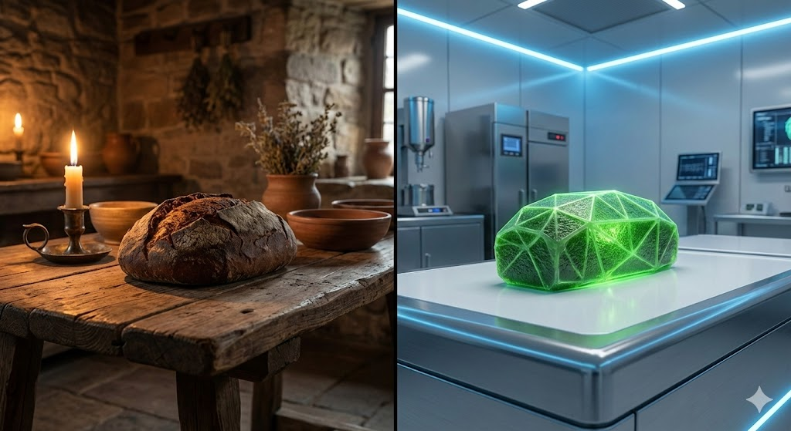

Zeitreise: Gestern & Morgen
Brot ist ein Spiegel der Geschichte. Es überlebte Vulkanausbrüche, wurde mit Sägemehl gestreckt und fliegt heute ins Weltall.
1. Antike: Das Brot von Pompeji (79 n. Chr.)
Beim Ausbruch des Vesuvs wurden in den Bäckereien Brote verkohlt und luftdicht konserviert. Wir wissen heute genau, wie sie aussahen.
Panis Quadratus
Ein runder Laib, der wie eine Torte in 8 Segmente eingeteilt war. Um den Bauch hatte er eine Schnur (wahrscheinlich zum Tragen oder Aufhängen). Römische Legionäre erhielten täglich eine Ration Brot – Getreide war der Treibstoff des Imperiums.
2. Hunger & Krieg (Verlorene Brote)
Wenn das Mehl ausging, wurde gestreckt.
- Rindenbrot (Skandinavien): Die innere Rinde der Kiefer (Phloem) wurde getrocknet und gemahlen. Reich an Vitamin C, aber bitter.
- Kartoffelbrot (Krieg): Gekochte Kartoffeln ersetzten bis zu 50% des Mehls. Das Brot wurde dadurch saftig, schimmelte aber schnell.
- Mutterkorn: Ein giftiger Pilz auf Roggen. Im Mittelalter verursachte er das "Antoniusfeuer" (Halluzinationen, Absterben von Gliedmaßen).
3. Space Bread: Das Krümel-Problem
Warum essen Astronauten Tortillas statt Toast?
Gefahr in der Schwerelosigkeit
Ein normaler Brotlaib krümelt. In der ISS würden diese Krümel schweben, in Atemwege geraten oder empfindliche Elektronik zerstören (Brandgefahr!). Die NASA nutzt daher speziell entwickelte Tortillas, die 18 Monate haltbar sind und nicht krümeln.
4. Labor & Zukunft (2050)
Die Weltbevölkerung wächst. Woher kommt das Protein?
- Insektenmehl: Grillen und Mehlwürmer, gemahlen zu "Mehl". Extrem proteinreich und nachhaltig.
- Algen (Spirulina): Färbt das Brot grün und liefert Omega-3.
- 3D-Druck: Personalisierte Ernährung. Eine Teig-Paste wird Schicht für Schicht gedruckt und per Laser gebacken.